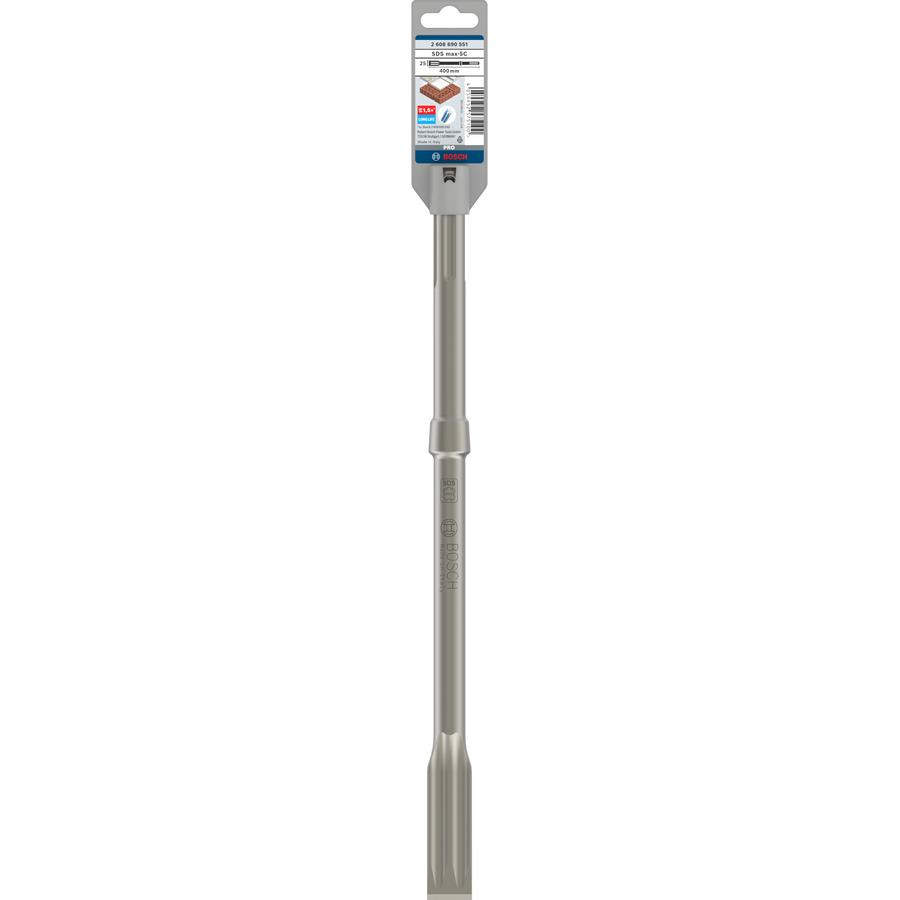
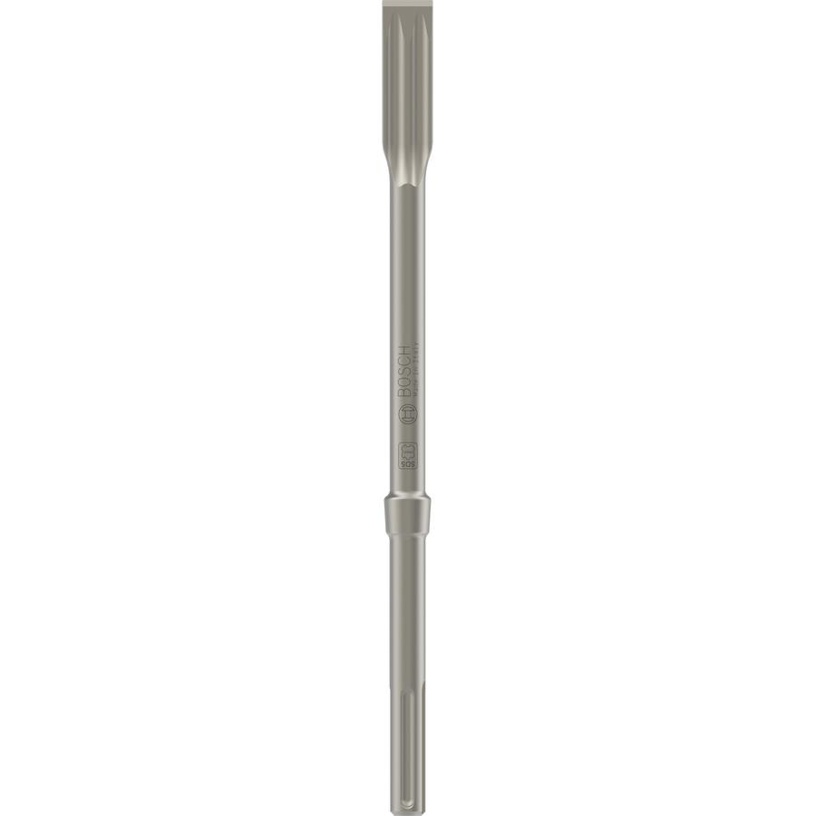

2608690551


| Total length, mm |
400 |
| Chisel cutting edge, mm |
25 |
| Shank shape |
SDS max |
| Packaging type |
Plastic packaging, hanger, with Euro hole |
| Pack quantity |
1 Pcs |
| Minimum order quantity |
1 Pcs |